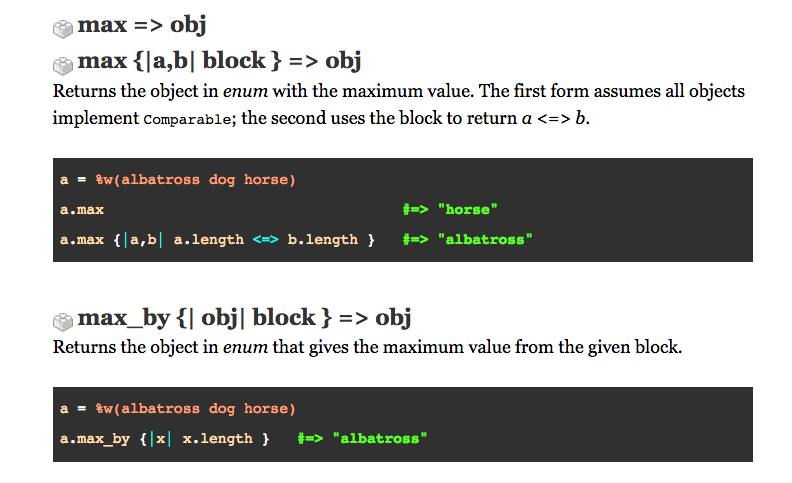

Max vs Max_by
This is gonna be quick
Man these ruby doc are INSCRUTABLE
What all this means is that Max will return the biggest value in a set of values(the ENUM)
Where Max_by lets you add a code block so when it searches the ENUM for the largest value its the largest Value, taking into consideration whatever paramaters you added in the code block.
So largest word in this array. You want Max
So largest word in this array, that starts with 'B'. You want Max_by